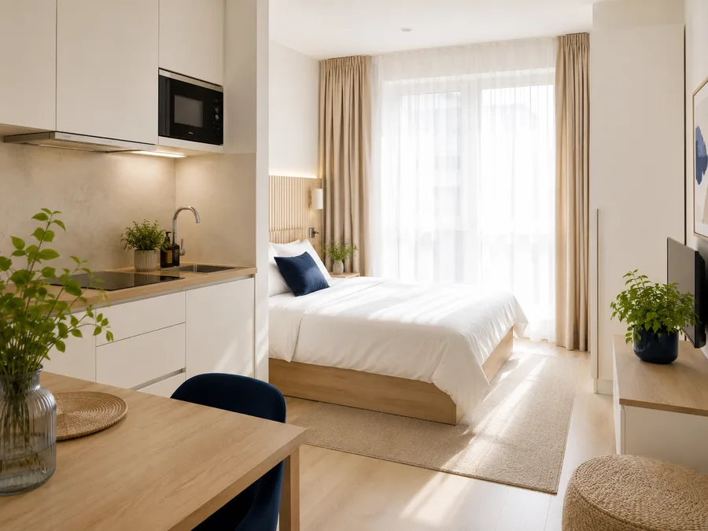
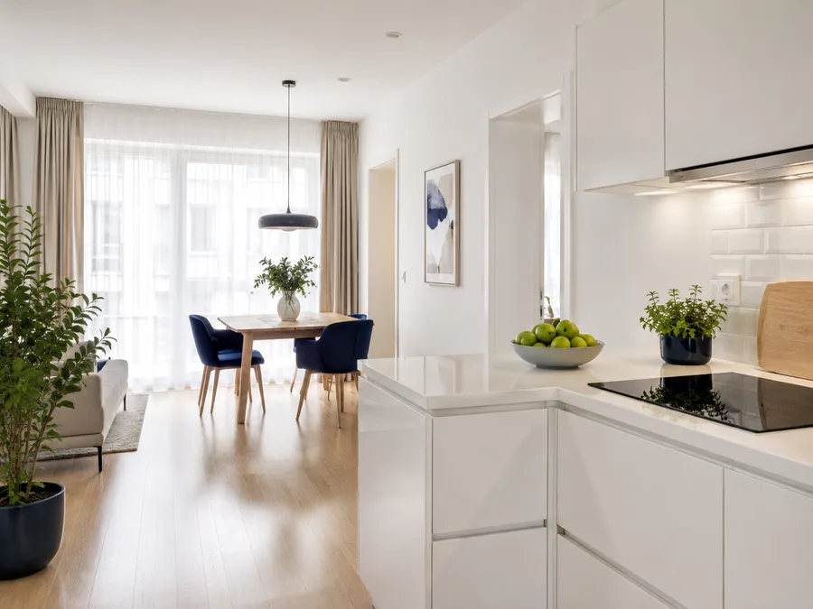
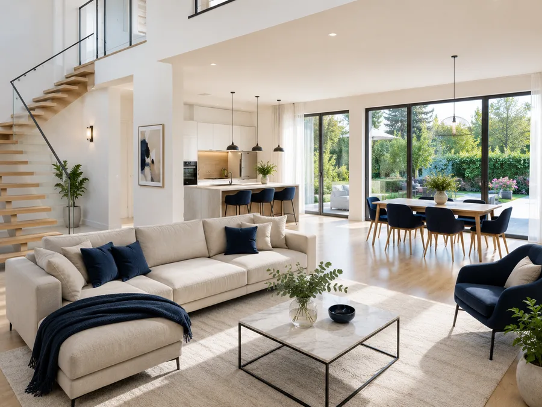
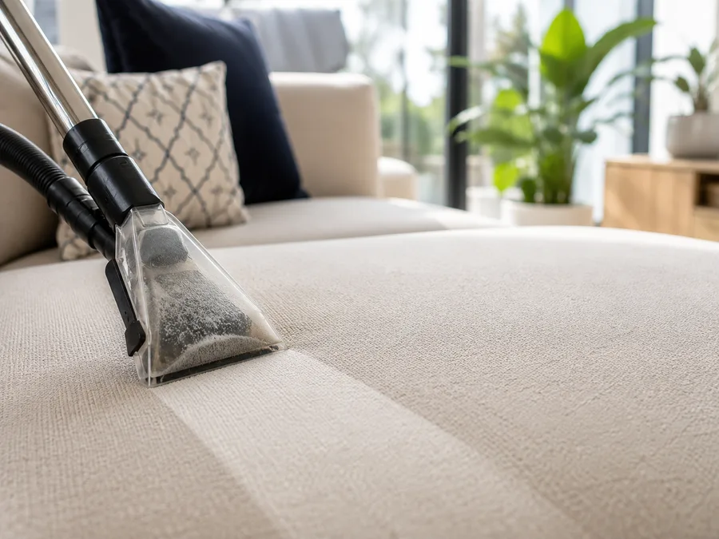

Upratovanie v Bratislave od 79,90 €Kúpite si hodiny — a čomu sa budeme venovať, poviete vy.
Prídeme s vlastnými prostriedkami, poviete nám priority a my ich odrobíme. Bez obhliadky, cena je známa vopred.
5,0 30 recenzií na Google Pozrieť →Koľko hodín potrebujete?
Cena je konečná. Doprava po Bratislave aj prostriedky sú v nej.
3hodiny MiniKúpeľňa, kuchyňa, podlahy a umytie okien 79,90 € 6hodín KlasikTo isté do hĺbky — spotrebiče zvnútra aj balkón 129,90 € 9hodín MaxiNajviac času na jednu návštevu, tepovanie v cene 169,90 €„Žiadne zdĺhavé objednávanie ani zbytočné obhliadky vopred — jednoducho prišli, upratali a výsledok bol perfektný. Stala som sa ich pravidelnou zákazníčkou a firmu som odporučila aj u nás v práci."Soňa M.
„Hľadala som spoľahlivú upratovaciu firmu a toto bola trefa do čierneho. Pani upratovačka odviedla neskutočne skvelú prácu — dala si záležať aj na detailoch. Je skvelý pocit vrátiť sa do dokonale čistého domova."Alexandra A.
„S upratovaním som bol veľmi spokojný. Všetko bolo urobené precízne, dôkladne a podľa mojich predstáv. Oceňujem profesionálny prístup, príjemné vystupovanie a dôraz na detaily."Dan A.
„Pomer cena a kvalita výborná. Poctivé umývanie a upratovanie, bola som veľmi spokojná."Natália F.
„Profesionálny prístup, rýchla komunikácia a kvalitne odvedená práca."Marek R.
Štyri veci, na ktoré sa ľudia pýtajú najviac
Tri balíky, platíte za hodiny




V cene každého balíka
- Čistiace prostriedky a vybavenie
- Doprava po Bratislave
- Umytie okien
- Bez obhliadky pred návštevou
Na okná vo výške si donesieme rebrík za 10 €.
Zľava −15 % pre dôchodcov a držiteľov preukazu ZŤP — pri rezervácii zadajte zľavový kód SOLIDARITA15. Pri prvej návšteve nám stačí ukázať preukaz.
Podrobné porovnanie balíkov
| Čo je v cene | Mini 3 h | Klasik 6 h | Maxi 9 h |
|---|---|---|---|
| Bežné upratanie (prach, povrchy, podlahy) | ✓ | ✓ | ✓ |
| Použitie vlastných čistiacich prostriedkov a vybavenia | ✓ | ✓ | ✓ |
| Priority si určíte vy (dohoda pred upratovaním) | ✓ | ✓ | ✓ |
| Dezinfekcia kúpeľne a WC | ✓ | ✓ | ✓ |
| Kuchyňa – povrchy a drez | ✓ | ✓ | ✓ |
| Umytie okien | ✓ | ✓ | ✓ |
| Kuchyňa do hĺbky (linka, obklady) | – | ✓ | ✓ |
| Balkón alebo terasa | – | ✓ | ✓ |
| Tepovanie sedačky/kobercov | 40 €/h | 40 €/h | ✓ |
| Generálne upratovanie celej nehnuteľnosti | – | – | ✓ |
Kancelárie, Airbnb a špeciálne priestory riešime na mieru — pošlite nezáväzný dopyt
Balík si vyberajte podľa toho, koľko času treba — nie podľa veľkosti bytu. Jednoizbový byt po maľovaní alebo po nájomníkoch môže pokojne potrebovať deväť hodín, kým udržiavané trojizbové bývanie zvládneme za tri. Keď si nie ste istí, napíšte nám a poradíme.
Vyberte si balík a voľný termín — rezerváciu dokončíte online platbou kartou, cez TatraPay alebo SporoPay. Faktúru pošleme e-mailom do 24 hodín.
Od rezervácie po Poriado(k) za tri kroky
- Vyberiete balík a termínOnline, bez obhliadky. Potvrdenie máte okamžite.
- Poviete nám priorityČo je najdôležitejšie upratať — tomu sa venujeme najviac.
- Prídeme a upracemeS vlastnými čistiacimi prostriedkami a vybavením.
Upratujeme v Bratislave, nie cez agentúru
Upratovaniu sa venujeme profesionálne už roky — u náročných klientov, v domácnostiach aj vo veľkých priestoroch. Za ten čas sme pochopili, čo robí upratovanie naozaj dobrým: nie odškrtaný zoznam, ale priestor, v ktorom sa cítite ako doma.
Preto sme sa rozhodli robiť to po svojom. Založili sme Poriado a všetky nazbierané skúsenosti sme vložili do služby, ktorá dáva zmysel vám — nie tabuľke. Prídeme s vlastným vybavením, dohodneme sa na prioritách a odvedieme prácu tak, akoby sme upratovali u seba doma.
Sme malý osobný tím, ktorý si zakladá na férovosti — bez skrytých poplatkov a bez výhovoriek. Čo si dohodneme, dodržíme, a k vášmu domovu pristupujeme spoľahlivo a diskrétne.
Dohodneme sa na prioritách a prídeme.
Vyberiete si balík a voľný termín, potvrdenie máte okamžite. Zrušenie zdarma do 24 hodín pred termínom.